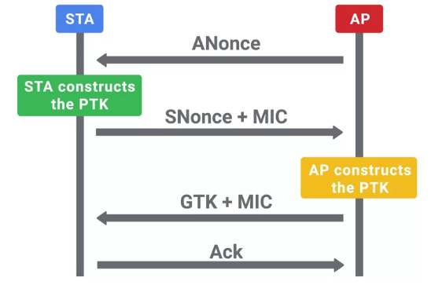

Seguridad Inalámbrica
Cifrado WEP y por qué no deberías usarlo
El primer protocolo de seguridad para redes Wi-Fi que se presentó fue WEP, o privacidad equivalente al cableado. Fue parte del estándar original 802.11 que se presentó en 1997. WEP estaba destinado a proporcionar privacidad a la par con la de la red cableada, lo que significaría que la información transmitida a través de la red debía estar protegida de la intercepción externa. Esta fue una consideración importante al diseñar la especificación inalámbrica. A diferencia de las redes cableadas, los paquetes podían ser interceptados por cualquier persona con proximidad física al punto de acceso o la estación cliente. Sin alguna forma de encriptación que protegiera los paquetes, alguien en las inmediaciones que quisiera escuchar podría leer el tráfico inalámbrico. WEP demostró ser muy malo para brindar confidencialidad o seguridad en conexiones inalámbricas. Se lo descartó rápidamente en 2004 a favor de sistemas más seguros.
Quiero que quede claro que ya nadie debería usar WEP.
WEP aplica el cifrado de flujo simétrico RC4 para encriptación. Usaba una clave compartida de 40 bits o 104 bits de la que se obtenía la clave de encriptación para paquetes individuales. La clave de encriptación real para cada paquete se calculaba tomando la clave compartida provista por el usuario y uniéndola a un vector de inicialización, o IV, de 24 bits. Es un bit de datos aleatorizado para evitar reutilizar la misma clave de encriptación entre paquetes. Como estos bits de datos están concatenados o unidos, un esquema de clave compartida de 40 bits usa una clave de 64 bits para encriptación y el esquema de 104 bits usa una clave de 128 bits. Originalmente, la encriptación WEP se limitaba a solo 64 bits debido a restricciones impuestas por los EE. UU. a las exportaciones de tecnologías de encriptación. Ahora bien, cuando esas leyes se modificaron, la encriptación de 128 bits estuvo disponible para su uso. Se introdujo la clave compartida que era de 10 caracteres hexadecimales para WEP de 40 bits, o de 26 caracteres hexadecimales para WEP de 104 bits. Cada carácter hexadecimal era de 4 bits. La clave también podía especificarse suministrando 5 o 13 caracteres ASCII, y cada carácter ASCII representaba 8 bits. Pero esto, en realidad, reduce el espacio de teclas disponible sólo a caracteres ASCII válidos en lugar de todos los posibles valores hexadecimales. Como este es un componente de la clave real, la clave compartida debe tener exactamente la cantidad de caracteres apropiada para el esquema de encriptación.
La autenticación WEP originalmente admitía dos modos diferentes, la autenticación por sistema abierto y la autenticación de clave compartida.
El modo de autenticación por sistema abierto no requería que los clientes suministraran credenciales. En su lugar, se les permitía autenticar y asociarse con el punto de acceso. Pero el punto de acceso comenzaría a comunicarse con el cliente encriptando tramas de datos con la clave WEP precompartida. Si el cliente no tenía la clave o tenía una clave incorrecta, no sería capaz de desencriptar las tramas procedentes del punto de acceso, o AP. Tampoco podría comunicarse con el AP.
La autenticación de clave compartida funcionaba haciendo que los clientes se autenticaran a través de un proceso de desafío-respuesta de cuatro pasos. Básicamente, el AP le pedía al cliente que demostrara tener la clave correcta. Así es como funciona. El cliente envía una solicitud de autenticación al AP. El AP responde con un desafío de texto sin encriptar, algo de datos aleatorios que se supone que el cliente debe encriptar por medio de la clave WEP compartida. El cliente responde al AP con el texto cifrado resultante de encriptar este texto de desafío. El AP verifica esto desencriptando la respuesta y verificándola contra el texto del desafío de texto sin formato. Si coinciden, se envía una respuesta positiva.
¿Hay algo que te parezca potencialmente inseguro en el esquema? Estamos transmitiendo tanto el texto sin formato como el texto cifrado de una manera que expone ambos mensajes a los potenciales espías. Esto abre la posibilidad de recuperación de la clave de cifrado por parte del atacante. Un concepto general en seguridad y encriptación es no enviar nunca el texto sin formato y el texto cifrado juntos, para que los atacantes no pueden averiguar la clave utilizada para la encriptación.
Pero la verdadera debilidad de WEP no se relacionaba con los esquemas de autenticación: su uso del cifrado de flujo RC4 y como se usaban los IV para generar claves de encriptación dieron lugar a la caída definitiva de WEP. El propósito principal de un IV es introducir más elementos aleatorios en la clave de encriptación para evitar reutilizarla. Cuando se utiliza un cifrado de flujo como RC4, es súper importante que no se reutilice la clave de encriptación. Esto permitiría a un atacante comparar dos mensajes encriptados con la misma clave y recuperar información. Pero, en WEP, la clave de encriptación solo se compone de la clave compartida, la que no cambia con frecuencia. Tenía 24 bits de datos aleatorizados, incluido el IV incrustado al final de la clave. Esto apenas da como resultado un grupo de 24 bits de donde se extraerán las claves de encriptación únicas para su uso. Como el IV está formado por 24 bits de datos, el número total de valores posibles no es muy grande para los estándares de computación modernos. Eso implica unos 17 millones de IV únicos posibles, lo que significa que un IV se volverá a usar después de unos 5,000 paquetes. Cuando se reutiliza un IV, la clave de encriptación también se reutiliza. También es importante destacar que el IV se transmite como texto sin formato. Si estuviera encriptado, el receptor no podría descifrarlo. Esto significa que un atacante solo tiene que rastrear los IV y prestar atención a los que se repiten.
El ataque real que permite que un atacante recupere la clave WEP se basa en las debilidades de algunos IV y en cómo el cifrado RC4 genera una secuencia de claves que se usa para encriptar las cargas útiles de datos. Esto permite que el atacante reconstruya esta secuencia de claves por medio de los paquetes encriptados que usan los IV débiles. También puedes ver las herramientas de código abierto que demuestran este ataque en acción, como Aircrack-ng o AirSnort; ellas pueden recuperar una clave WEP en cuestión de minutos.
¡Vamos a deshacernos de WEP! WPA / WPA2
El reemplazo para WEP de Wi-Fi Alliance fue WPA, o acceso protegido a Wi-Fi. Se presentó en 2003 como una medida temporal mientras la alianza finalizaba su especificación para lo que se convertiría en WPA2, presentado en 2004. WPA se diseñó como un reemplazo a corto plazo que sería compatible con hardware anterior habilitado para WEP mediante una simple actualización de firmware. Esto facilitó que los usuarios lo adoptaran porque no requería la compra de nuevo hardware de Wi-Fi.
Para abordar las deficiencias de la seguridad WEP, se introdujo un nuevo protocolo de seguridad llamado TKIP, o Protocolo de integridad de clave temporal. TKIP implementó tres nuevas características que lo hicieron más seguro que WEP. Primero, se usó un método de obtención de claves más seguro para incorporar de forma segura el IV en la clave de encriptación por paquete. Segundo, se implementó un contador de secuencias para impedir ataques de repetición mediante el rechazo de paquetes defectuosos. En tercer lugar, se introdujo una comprobación de integridad de mensajes (MIC) de 64 bits para impedir la falsificación, manipulación o corrupción de paquetes.
TKIP todavía usa el cifrado RC4 como algoritmo de encriptación subyacente. Pero abordó las debilidades de generación de clave de WEP por medio de una función de combinación de claves para generar claves de encriptación únicas por paquete. También usa claves de 256 bits de longitud. Esta función de combinación de claves incorpora la frase de contraseña Wi-Fi de larga duración con el IV. Esto es diferente en comparación con la concatenación simplista de la clave compartida y el IV.
En WPA, la clave pre compartida es la contraseña de Wi-Fi que compartes con las personas cuando llegan y desean utilizar tu red inalámbrica. Esto no se usa directamente para encriptar el tráfico. Se usa como factor para obtener la clave de encriptación. La frase de contraseña se alimenta en PBKDF2, o Función de derivación de claves basada en contraseña-2, junto con la SSID de las redes Wi-Fi como salt. Esto se pasa por la función HMAC-SHA1 4,096 veces para generar una clave de encriptación única. La salt de SSID se incorpora para ayudar a defender contra los ataques de tabla de arco iris. Las 4,096 rondas de HMAC-SHA1 aumentan la potencia de cómputo requerida para un ataque de fuerza bruta.
Debo señalar que la clave precompartida se puede ingresar usando dos métodos diferentes. Se puede ingresar un valor hexadecimal de 64 caracteres, o el valor de 64 caracteres se usa como clave, que es de 64 caracteres hexadecimales por cuatro bits, lo que resulta en 256 bits. La otra opción es usar la función PBKDF2, pero solo si se ingresan caracteres ASCII como frase de contraseña. Si ese es el caso, la frase de contraseña puede tener entre ocho y 63 caracteres.
WPA2 mejora aún más la seguridad de WPA implementando CCMP, o Protocolo CBC-MAC con modo contador. WPA2 es la mejor seguridad para redes inalámbricas disponible actualmente. Se basa en el cifrado AES que, finalmente, se aleja del cifrado RC4 inseguro. El proceso de obtención de claves no se modificó de WPA y los requisitos de clave precompartida son los mismos. El contador con CBC-MAC es un modo particular de operación para cifrados de bloque. Permite la encriptación autenticada, lo que significa que los datos se mantienen en estricta confidencialidad y se autentican. Esto se logra mediante un mecanismo de "autenticación, luego encriptación". El resumen CBC-MAC se calcula primero. Luego, el código de autenticación resultante se encripta junto con el mensaje utilizando un cifrado de bloque. Estamos usando AES en este caso, operando en modo contador. Esto convierte un cifrado de bloque en un cifrado de flujo mediante el uso de un valor de inicialización aleatorio junto con un contador incremental para crear un flujo de clave con el cual encriptar datos.
Ahora, veamos el proceso del protocolo de enlace de cuatro vías que autentica a los clientes en la red. Este proceso también genera la clave de encriptación temporal que se usará para encriptar los datos de este cliente. Este proceso se llama protocolo de enlace de cuatro vías, ya que se compone de cuatro intercambios de datos entre el cliente y el AP. Está diseñado para permitir que un AP confirme que el cliente tiene la clave maestra por pares (PMK) correcta, o una clave precompartida en una configuración WPA-PSK, sin revelar la PMK. La PMK es una clave de larga duración y puede que no cambie durante mucho tiempo. Entonces, se obtiene una clave de encriptación a partir de la PMK que se usa para la verdadera encriptación y desencriptación del tráfico entre un cliente y un AP. Esta clave se denomina clave transitoria por pares, o PTK. La PTK se genera usando la PMK, el nonce del AP, el nonce del cliente, la dirección MAC del AP y la dirección MAC del cliente. Todos ellos están concatenados y se los pasa por una función. Los nonces del AP y del cliente son solo bits aleatorios de datos que cada parte genera y luego intercambia. Las direcciones MAC de cada parte ya serían conocidas a través de los encabezados de paquetes, y ambas partes ya deberían tener la PMK correcta. Con esta información, se puede generar la PTK. Esto es diferente para cada cliente a fin de permitir la confidencialidad entre clientes. La PTK está compuesta por cinco claves individuales, cada una con su propio objetivo. Se usan dos claves para encriptar y confirmar los paquetes EAPoL, y el protocolo de encapsulación transporta estos mensajes. Se usan dos claves para enviar y recibir códigos de integridad de mensajes. Y por último, hay una clave temporal, que en realidad se usa para encriptar los datos.
El AP también transmitirá la GTK, o clave transitoria de grupos. Se encripta mediante la clave EAPoL contenida en la PTK, que se utiliza para encriptar el tráfico de multidifusión o difusión. Dado que este tipo de tráfico debe ser legible para todos los clientes conectados a un AP, esta GTK se comparte entre todos ellos. Se actualiza y retransmite periódicamente y cuando un cliente desasocia el AP.
Los cuatro mensajes intercambiados en orden son: el AP, que envía un nonce al cliente; el cliente luego envía su nonce a la AP; el AP envía el GTK y el cliente responde con un ACK que confirma la negociación exitosa.

Los estándares WPA y WPA2 también introducen una autenticación 802.1x en las redes Wi-Fi. Por lo general, se llama WPA2-Enterprise. Las configuraciones que no son 802.1x se llaman WPA2-Personal o WPA2-PSK, ya que utilizan una clave precompartida para autenticar clientes. No volveremos a hablar de 802.1x aquí, ya que funciona de manera similar a 802.1x en redes de cable, lo que ya vimos. Lo único diferente es que el AP actúa como autenticador en este caso. El RADIUS de backend sigue siendo el servidor de autenticación y la PMK se genera usando componentes del método EAP elegido.
Si bien no es directamente una función de seguridad, WPS, o configuración protegida por Wi-Fi, es una característica conveniente diseñada para facilitar que los clientes se unan a una red protegida por WPA-PSK. Puedes encontrar WPS en una pequeña instalación de TI que use routers SOHO comerciales. Puede ser útil en estos entornos más pequeños para facilitar que los clientes inalámbricos se unan a las redes inalámbricas de forma segura. Pero su habilitación acarrea implicaciones de seguridad de las que debes estar al tanto. Wi-Fi Alliance presentó WPS en 2006. Ofrece varios métodos diferentes que permiten a nuestro cliente inalámbrico unirse, de forma segura, a una red inalámbrica sin tener que ingresar directamente la clave precompartida. Esto facilita el uso de frases de contraseña muy largas y seguras sin que sean innecesariamente complicadas.
¿Te imaginas tener que hacer que tus amigos y familiares, con menor inclinación tecnológica, ingresen una frase de contraseña de 63 caracteres para usar tu Wi-Fi cuando te visitan? Probablemente eso no funcionaría tan bien. WPS simplifica esto al permitir el intercambio seguro del SSID y la clave precompartida. Esto se hace después de autenticar o intercambiar datos utilizando uno de los cuatro métodos admitidos. WPS admite la autenticación por ingreso de PIN, NFC o USB para el intercambio fuera de banda de los detalles de la red, o autenticación por pulsador.
Probablemente viste el mecanismo de pulsador. Por lo general, es un pequeño botón en algún lugar del router de casa, con dos flechas que apuntan en sentido contrario a las agujas del reloj. El mecanismo de pulsador funciona al requerir que se presione un botón tanto del lado del AP como del lado del cliente. Esto requiere proximidad física y una pequeña ventana de tiempo para que el cliente pueda autenticarse presionando por sí mismo un botón.
Los métodos NFC y USB solo proporcionan un canal diferente a fin de transmitir los detalles para unirse a la red.
Los métodos de PIN son realmente interesantes y también en donde se presentaron fallas críticas. El mecanismo de autenticación por PIN admite dos modos. En un modo, el cliente genera un PIN que luego se ingresa en el AP; en el otro modo, el AP tiene un PIN normalmente hard-coded en el firmware que se ingresa en el cliente. El segundo modo es vulnerable a un ataque de fuerza bruta en línea.
El método de autenticación por PIN usa un PIN de ocho dígitos de longitud, pero el último dígito es una suma de comprobación que se calcula a partir de los primeros siete dígitos. Esto hace que el número total de PIN posibles sea igual a 10 a la séptima potencia (10^7), o alrededor de 10 millones de posibilidades. Pero el PIN es autenticado por el AP en mitades. Esto significa que el cliente enviará los primeros cuatro dígitos al AP, esperará una respuesta positiva o negativa, y luego enviará la segunda mitad del PIN si la primera mitad fue correcta. ¿Viste algo malo en todo esto? En realidad, estamos reduciendo cada vez más el total de PIN válidos posibles y haciendo mucho más fácil adivinar cuál es el PIN correcto. La primera mitad del PIN, de cuatro dígitos, tiene aproximadamente 10,000 posibilidades. La segunda mitad, solo tres dígitos debido al valor de suma de comprobación, tiene un máximo de solo 1,000 posibilidades. Esto significa que el PIN correcto se puede adivinar en un máximo de 11,000 intentos. Parece mucho, pero en realidad no lo es. Sin ningún tipo de limitación de la velocidad de transmisión de datos, un atacante podría recuperar el PIN y la clave precompartida en menos de cuatro horas.
En respuesta a esto, Wi-Fi Alliance revisó los requisitos para la especificación WPS. Introdujo un período de bloqueo de un minuto después de tres intentos de PIN incorrectos. Esto aumenta el tiempo máximo para adivinar el PIN de cuatro horas a menos de tres días. Eso se encuadra fácilmente en el ámbito de las posibilidades para un atacante determinado y paciente, pero se pone peor. Si tu red se ve comprometida con este ataque, porque el PIN es un elemento invariable que forma parte de la configuración del AP, el atacante podría simplemente reutilizar el PIN de WPS ya recuperado para obtener la nueva contraseña. Esto sucedería incluso si detectaras clientes inalámbricos sin autorización en tu red y cambiaras tu contraseña de Wi-Fi.
WPA2 es un protocolo de seguridad muy sólido. Se desarrolló usando los mejores mecanismos de su clase para impedir ataques y asegura la confidencialidad de los datos que está protegiendo. Aun así, es susceptible a algunas formas de ataque. El protocolo de enlace de autenticación de cuatro vías que vimos anteriormente en realidad es susceptible a un ataque de fuerza bruta fuera de línea. Si un atacante puede capturar el proceso de protocolo de enlace de cuatro vías solo para paquetes, puede comenzar a adivinar la clave precompartida o la PMK. Puede tomar los nonces y las direcciones MAC de los paquetes del protocolo de enlace de cuatro vías y calcular las PTK. Como las claves secretas del código de autenticación del mensaje se incluyen como parte de la PTK, si se adivina correctamente la PMK, esto producirá una PTK que validará con éxito una MIC. Esto es un ataque fuerza de bruta o basado en diccionario, por lo que depende de la calidad de los intentos de adivinar las contraseñas. Se requiere una buena cantidad de poder computacional para calcule la PMK a partir de las conjeturas de contraseña y los valores de SSID. Pero la mayor parte de los requisitos computacionales recaen sobre el cálculo de PMK. Esto requiere 4,096 iteraciones de una función hash, lo que puede acelerarse masivamente mediante el uso de recursos de computación en la nube y acelerados por GPU. Debido a que la mayor parte de los cálculos implican el cálculo de la PMK, incorporando las conjeturas de contraseña en los SSID es posible precalcular las PMK de forma masiva para combinaciones de SSID y contraseña comunes. Esto reduce los requisitos computacionales para obtener la PTK a partir de los elementos de sesión únicos. Estos conjuntos precalculados se conocen como tablas de arco iris y esto se ha hecho exactamente así. Hay tablas de arco iris disponibles para descargar para los principales 1000 SSID más vistos y 1 millón de contraseñas.
Endurecimiento inalámbrico
Ahora que vimos las opciones de seguridad disponibles para proteger redes inalámbricas, ¿cuál crees que sería la opción más segura? En un mundo ideal, todos estaríamos usando 802.1X con EAP-TLS para proteger nuestras redes inalámbricas. Ofrece lo que podría llamarse la mejor seguridad disponible, siempre que se suponga un manejo adecuado y seguro de los aspectos en relación con la PKI. Pero, esta opción también requiere un montón de complejidad y gastos generales adicionales. Esto es porque requiere el uso de un servidor RADIUS y un backend de autenticación adicional como mínimo. Si se implementa EAP-TLS, entonces también se necesitarán todos los componentes de la infraestructura de clave pública. Esto incorpora aún más complejidad y gastos de gestión. No solo tienes que implementar PKI de forma segura en el backend para administrar certificados, sino que se debe implementar un sistema para firmar los certificados de cliente. También tienes que distribuirlos a cada cliente que se autentique en la red. Esto suele ser más costoso de lo que muchas empresas están dispuestas a asumir debido a la compensación inherente de seguridad frente a conveniencia.
Si 802.1X es demasiado complicado para una empresa, la siguiente mejor alternativa sería WPA2 con el modo AES/CCMP. Pero para protegerse contra ataques de fuerza bruta o de tabla de arco iris, deberíamos tomar algunas medidas para elevar el nivel computacional. Una frase de contraseña larga y compleja que no se encuentre en un diccionario aumentaría la cantidad de tiempo y recursos que un atacante necesitaría para descifrarla. Cambiar el SSID a algo poco común y único también reduciría la probabilidad de ataques de tabla de arco iris. Requeriría que un atacante hiciera los cálculos por sí mismo, lo que aumenta el tiempo y los recursos necesarios para realizar un ataque.
Al usar una contraseña de Wi-Fi larga y compleja, tal vez te veas tentado a usar WPS para que los clientes se unan a la red. Pero antes ya vimos que esto podría no ser una buena idea desde una perspectiva de seguridad. En la práctica, no verás WPS habilitado en un entorno empresarial porque es una tecnología orientada al consumidor. Si tu empresa valora la seguridad sobre la conveniencia, debes asegurarte de que WPS no esté habilitado en tus AP. Asegúrate de que esta función esté desactivada en tu consola de administración de AP. Tal vez también desees verificar que la función esté realmente desactivada usando una herramienta como Wash, que escanea y enumera los equipos que tienen WPS habilitado. Se recomienda efectuar esta verificación independiente, ya que algunos fabricantes de routers no te permiten deshabilitarlo. En algunos casos, deshabilitar la función a través de la consola de administración no desactiva la función.